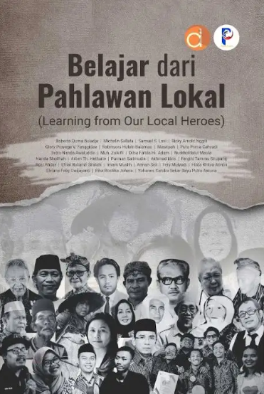
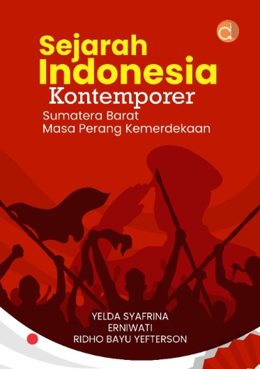
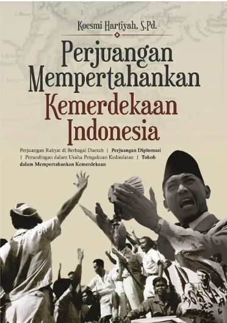

|
 |
 |
 |

|

|
|
 |
 |
 |
|
|
| Judul Buku | Penulis | Penerbit | Tahun terbit |
|---|---|---|---|
| Belajar DariPahlawan Lokal (Learning from Our Local Heroes) |
Michelin Sallata, Roberto Duma Bulada, Semuel S. Lusi, Ricky Arnold Nggili, dkk |
deepublish | 2024 |
| Judul Buku | Penulis | Penerbit | Tahun terbit |
| Sejarah Indonesia Kontemporer Sumatera Barat Masa Perang Kemerdekaan |
Yelda Syafrina, Erniwati, Ridho Bayu Yefterson |
deepublish | 2023 |
| Judul Buku | Penulis | Penerbit | Tahun terbit |
| Perjuangan Mempertahankan Kemerdekaan Indonesia |
Koesmi Hartiyah | deepublish | 2017 |
| Judul Buku | Penulis | Penerbit | Tahun terbit |
| Malin Kundang Pelangi | Dian Aprilia Dewi | Jakarta : Elex Media Komputindo | 2013 |
| Judul Buku | Penulis | Penerbit | Tahun terbit |
| Timun Mas: Cerita rakyat Indonesia | Rahmah Asa | Pustaka Obor Indonesia | 2021 |
| Belajar Dari Pahlawan Lokal (Learning from Our Local Heroes) |
Sejarah Indonesia Kontemporer Sumatera Barat Masa Perang Kemerdekaan |
Perjuangan Mempertahankan Kemerdekaan Indonesia |
Malin Kundang Pelangi | Timun Mas: Cerita rakyat Indonesia | 9 pahlawan yang diceritakan perjuangannya di masing-masing tempat asal.para pembaca diajak lebih mengenal nama-nama pahlawan dan kisah perjuangannya.Kisah perjuangan mereka bisa menjadi motivasi bagi generasi penerus bangsa untuk melanjutkan perjuangan dan menjaga kemerdekaan. |
Para pembaca akan memahami bagaimana situasi politik pasca pembacaan teks proklamasi di Sumatera Barat. Sekaligus bagaimana perjuangan para pahlawan dalam melawan penjajahan Belanda. Melalui catatan sejarah, meski proklamasi dibacakan di tahun 1945, akan tetapi perjuangan pahlawan di sejumlah daerah masih menderu |
para pembaca diajak mengetahui perjuangan para pahlawan dalam menjaga kemerdekaan yang susah payah didapatkan pasca pembacaan teks proklamasi di 17 Agustus 1945. buku ini memberikan informasi detail bagaimana para tokoh dan cendekiawan bangsa masa tersebut melakukan diplomasi. |
cerita Malin Kundang mengandung berbagai makna dan pesan moral yang begitu dalam. Cerita ini tidak hanya relevan bagi masyarakat Minangkabau, tetapi juga bagi semua orang. Pesan utama dari cerita Malin Kundang adalah pentingnya berbakti kepada orang tua. Kesombongan dan lupa diri menjadi salah satu hikmah yang dapat diambil dalam cerita Malin Kundang. |
Melalui kisah Timun Mas, anak-anak dapat belajar tentang keberanian, keteguhan hati, kasih sayang, dan pentingnya akal budi.dongeng ini juga memberikan inspirasi bagi setiap individu untuk menghadapi tantangan hidup dengan optimisme dan keyakinan diri. |
|---|---|---|---|---|